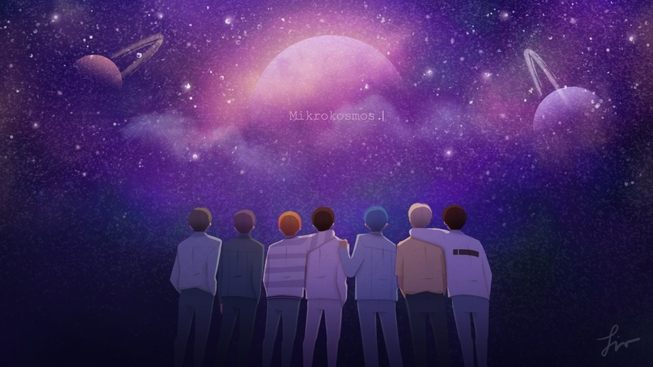

방탄소년단
kim namjoon, kim seokjin, min yoongi, jung hoseok, park jimin, kim taehyung, jeon jungkook, BTS

Mikrokosmos 소우주
lyrics:
english translations
Like the twinkling stars
Like a building with flickering lights
We’re shining
In each of our rooms, in each of our planets
Some of the lights are ambition
Some of the lights are wandering
Everyone’s light
Is so precious
In the dark night (don’t be lonely)
Like the stars (we shine)
Don’t disappear
Because you’re a great existence
Let us shine
The expression of the night is so beautiful
Not because of the stars or starlight, but because of us
You got me
I look at you and dream
I got you
In the dark nights
We saw each other’s light
We were saying the same things
The stars shine the most in the deepest of nights
The stars shine the most in the deepest of nights
The deeper the night, the more the stars shine
Each person has their own history
Each person has their own star
7 billion stars shine
In each of the 7 billion worlds
7 billion lives, the night view of the city
Might be the night of another city
Each dream, let us shine
Brighter than anyone else
One
The expression of the night is so beautiful
Not because of the darkness or the moonlight, but because of us
You got me
I look at you and dream
I got you
In the dark nights
We saw each other’s light
We were saying the same things
The stars shine the most in the deepest of nights
The stars shine the most in the deepest of nights
The deeper the night, the more the stars shine
The light of the city, the stars of the city
I remember the night sky I looked up at when I was young
The light of a person, the star of a person
Fills this place up
We shinin’
You got me
I look at you and breathe
I got you
In the dark nights
Shine, dream, smile
Oh let us light up the night
We shine just as we are
Shine, dream, smile
Oh let us light up the night
We shine just by being us
Tonight